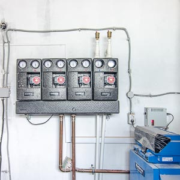
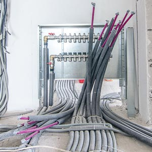
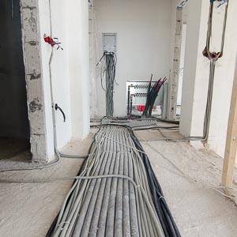

Проект системы отопления
Система отопления является самой сложной инженерной системой загородного дома, от надёжности работы которой зависит не только безопасность и комфорт, но и сама возможность проживания в доме в зимний период. Самым ответственным этапом внедрения этой системы является проектирование. Почему этот этап так важен?
Комфорт и экономическая эффективность
Профессионально выполнение расчеты позволяют создать систему, обеспечивающую комфортные условия проживания в холодное время года, которая при этом работает с максимальной экономической эффективностью. Экономия на проекте системы отопления может обернуться излишними расходами на газ и неравномерному обогреву помещений. Кроме этого, грамотный тепловой расчёт поможет сэкономить еще и на закупке оборудования. Хорошие проекты учитывают такие особенности дома, как состав «пирога» стены, ориентация здания относительно сторон света и многие другие особенности.
Безопасность
Система отопления работает с высокой температурой и давлением, что может представлять опасность в случае, когда монтаж выполнен непрофессионально. В процессе проектирования необходимо учитывать человеческий фактор, и отдавать предпочтение тем решениям, в которых его влияние минимально в процессе монтажа.
Порядок работы
- Вы присылаете исходные данные нам на электронную почту hello@otdelkalux.ru:
- Поэтажные планы дома с указанием площадей и назначения помещений;
- Общие пожелания о том какие параметры вы хотите получить в этих помещениях;
- Желательно указать расстановку сантехнических приборов и места подключения к внешним коммуникациям.
- На основе этих данных мы составляем предварительные техническое задание, отражающее те решения, которые наилучшим образом подойдут в вашем загородном доме. Далее мы формируем предварительное коммерческое предложение с указанием стоимости проектирования, оборудования и монтажа.
- Если предложение вас устраивает, то необходима встреча у вас на объекте для осмотра объекта и уточнения деталей. Связано это с тем, что архитектурные планы не всегда соответствуют построенному зданию, а некоторые существенные для проектирования детали могут и вовсе отсутствовать в документации (состав «пирога» стен, ориентация дома относительно сторон света и т.п.). При выезде уточняются размеры и сама возможность монтажа инженерной системы. Зачастую после выезда инженера-проектировщика на объект, в первоначальное техническое задание вносятся существенные изменения.
- По результатам встречи разрабатывается техническое задание на производство работ по проектированию, определяется стоимость работ и заключается договор.
На основании собранных данных и пожеланий заказчика, отраженных в техническом задании, наш инженер выполняет проектирование системы отопления. Выполняется тепловой расчёт, разрабатываются аксонометрические схемы и плановые чертежи, составляются спецификации на материалы и оборудование. Готовый проект передается заказчику в виде двух напечатанных экземпляров, а также в электронном виде.
  
Рекомендации по выбору подрядчика
- Лучше отдать предпочтение тем, кто оказывает услуги и проектирования и монтажа. Так вы избежите ситуации, когда монтажники говорят, что по проекту собрать невозможно, а проектанты говорят – «А мы бы собрали!»
- Заключать договор с организацией, которая занимается поставками оборудования, проектированием и монтажом – не самый оптимальный вариант. Система скорее всего будет хорошая, но в плане «избыточности» часто возникают проблемы, т.к. если фирма продаёт оборудование, то в проекте будут скорее всего самые новые и «навороченные» модели. Даже если стоимость самого оборудования и монтажа кажется адекватной, очень часто можно обойтись более простыми и проверенными временем решениями за меньшие деньги и без какой-либо потери в качестве или эффективности.
- Если проектанту для выполнения работ нужна только документация, а организовать встречу на объекте он сам не предлагает – не стоит с ним работать! Это на 100% означает, что он не заинтересован в качестве проекта. В реальности объект всегда имеет расхождения с документацией, поэтому при таком подходе хороший проект вам точно не сделают.
Обсудим детали?